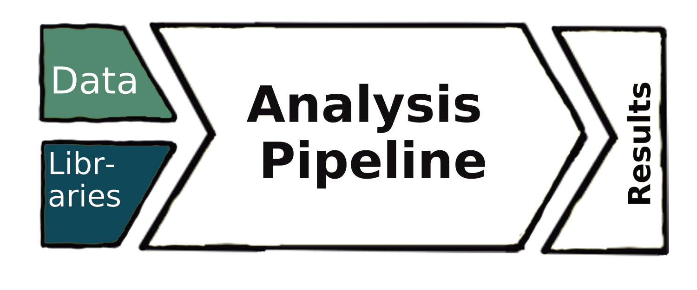
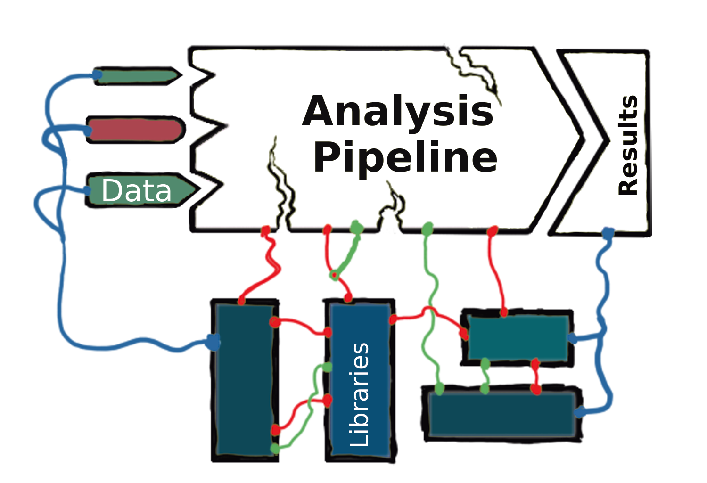
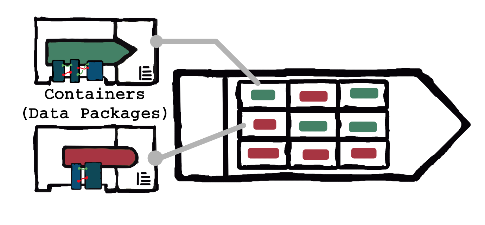

Dev & Data Operations
Contents
Dev & Data Operations¶
version control (git)
git forges and branch workflow
data packages (dvc, frictionless)
Special: this repository!
Digital infrastructure promoting data sharing and consumption
Data
Tools (for the data)
Guides (Documentation)
In Theory¶
Analysts, data scientists, etc.:
Load their data
Grab their trusty libraries of well-documented tools
\(\rightarrow\) pipeline \(\rightarrow\)
Report out results that anyone can use and trust!

In Practice¶
~80% of an Analyst’s time is spent wrangling and preprocessing their data… everyone re-invents the wheel for almost every analysis!

Lesson from History¶
Shipping cargo pre-1956
costs skewed 10-to-1 for loading/unloading
Teams of dock-workers in the 100’s
custom loading per-cargo-type (bananas? vehicles? oil?)
custom loading per-ship (length? width? fuel cost?)
…
Shipping containers changed this completely! []
Uniform loading/unloading interfaces
modular storage shape, unified ship design needs
Interiors still a mess… but solving was asynchronous & distributed
Containerize — Data Packages!¶

Data-as-Code¶
How do we do this, in practice? One way… DataOps
Treat Data-as-Code to exploit existing DevOps infrastructure
Dependency management and provision
Version Control and releases
Reproducibility and programmatic access
Documentation-driven “Development”¶
Documentation, of data infrastructure is a container’s “cargo manifest”
distributed and asynchronous collaboration? Version control (
git)separation of form and content? Plain text (
markdown)Deploy PDF’s, websites, etc? Static site generators